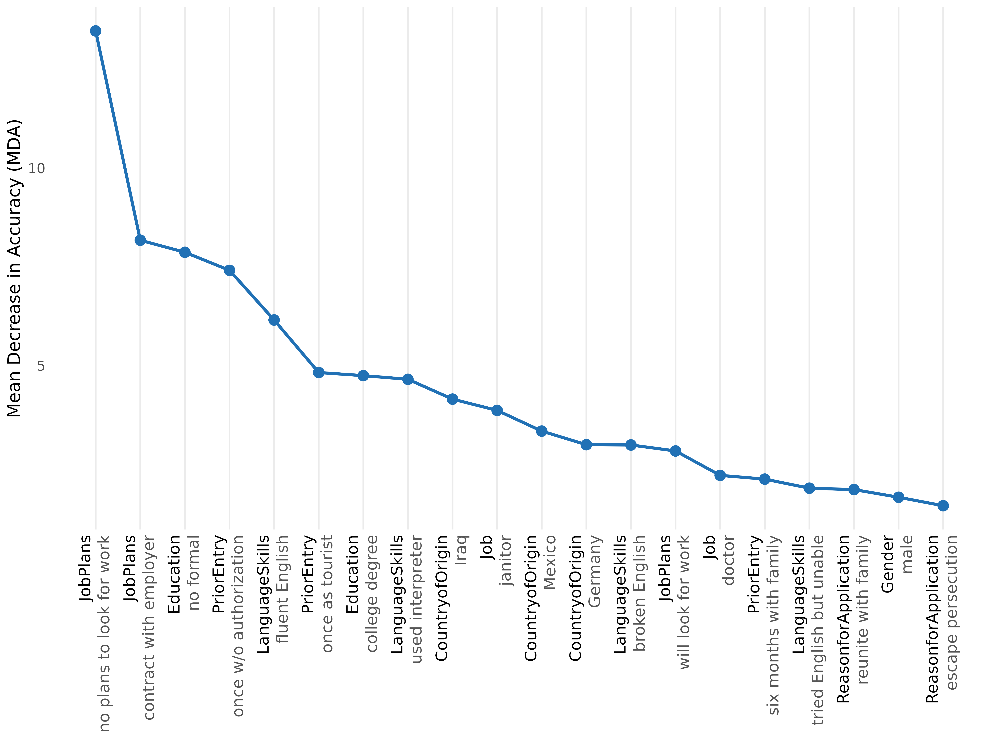
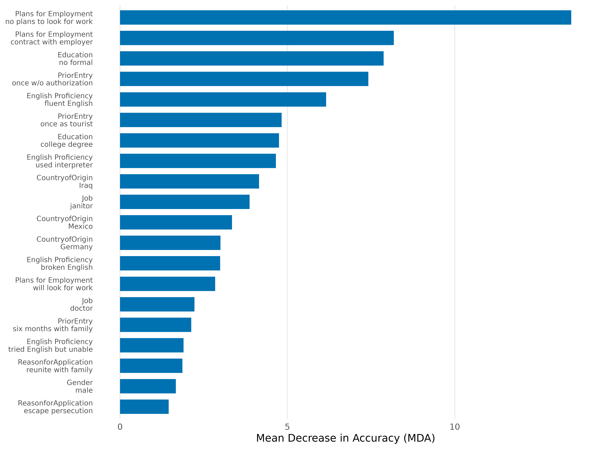
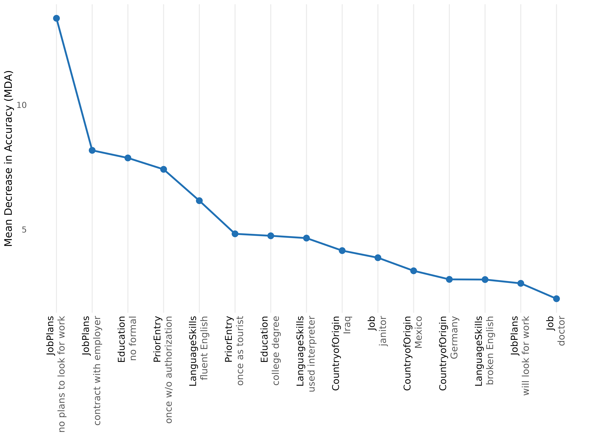

1. What cjdiag does
Standard conjoint analysis tools estimate Average Marginal Component Effects (AMCEs) — the causal effect of changing a single attribute level. AMCEs tell you what respondents prefer, but not how they decide: which attribute levels they actually attend to, which ones they ignore, and in what order they process information.
cjdiag fills that gap. It works at the level of individual attribute levels — not aggregated attributes — because the specific level (e.g., “no plans to look for work”, not just “Job Plans” as a whole) is what triggers respondent decisions.
cjdiag is complementary to cjoint/cregg
(which estimate AMCEs). The intended workflow is: run those for AMCEs
first, then run cjdiag to diagnose how respondents actually made those
choices.
2. Quick start
library(cjdiag)
data(immig)
f <- Chosen_Immigrant ~ Gender + Education + LanguageSkills +
CountryofOrigin + Job + JobExperience + JobPlans +
ReasonforApplication + PriorEntry
rf <- cj_fit(f, data = immig, method = "forest")
rf
#> Conjoint Random Forest
#> ======================
#>
#> Resolution: levels
#> Trees: 500
#> OOB Error: 40.3%
#> Observations: 2,000
#> Attributes: 9
#> Levels: 50
#>
#> Top 10 levels by MDA:
#>
#> # A tibble: 10 × 7
#> rank attribute level mda root_pct class_0 class_1
#> <int> <chr> <chr> <dbl> <dbl> <dbl> <dbl>
#> 1 1 JobPlans no plans to look for wo… 13.5 15.4 12.3 7.25
#> 2 2 JobPlans contract with employer 8.18 11.2 3.70 6.98
#> 3 3 Education no formal 7.87 7.4 8.04 2.38
#> 4 4 PriorEntry once w/o authorization 7.42 10.4 6.87 3.66
#> 5 5 LanguageSkills fluent English 6.16 8.2 2.71 6.00
#> 6 6 PriorEntry once as tourist 4.83 2.4 1.61 5.25
#> 7 7 Education college degree 4.75 6.4 0.153 6.16
#> 8 8 LanguageSkills used interpreter 4.66 5.6 4.91 1.37
#> 9 9 CountryofOrigin Iraq 4.15 4.6 3.53 2.15
#> 10 10 Job janitor 3.87 3 2.09 3.36
plot(rf, type = "rank", top_n = 20)
3. Choosing a method
| Estimand | method = |
Question | Output | Behavioural assumption | When to use |
|---|---|---|---|---|---|
| Level importance | "forest" |
Which attribute levels matter most? | MDA, root-split rate per level | None — non-parametric | Default. Always fit this first. |
| Decision structure | "tree" |
How do respondents structure their decisions? | Hierarchical CART splits | Lexicographic / sequential | When you suspect a gatekeeper. |
| Level attendance | "crt" |
Which levels survive a strict signal-vs-noise test? | Lambda-survival, attended/ignored | Sparsity (most levels are noise) | When you want a hard attendance test. |
| Decision order | "nmm" |
In what order do levels settle choices? | Decisiveness ranking, cumulative % | Sequential elimination (EBA) | When you care about the decision order. |
| Individual attendance | "marginal_r2" |
Which attributes did each respondent actually use? | Per-respondent R² matrix | Per-respondent simple-regression fit | When you want individual-level heterogeneity. |
Each method also has its own task-oriented vignette: forest, tree, nmm, marginal_r2, crt.
4. cj_fit() — full reference
cj_fit() is the single entry point. It dispatches on
method and returns an S3 object inheriting from
cjdiag_fit.
Signature
cj_fit(formula, data, method = c("forest", "tree", "crt", "nmm",
"marginal_r2"),
resolution = c("levels", "attributes"),
ntree = 500L, cp = 0.005,
lambda_grid = c(1, 2, 3, 5, 7, 10, 15, 20, 25, 30,
40, 50, 75, 100, 150, 200, 300, 400, 500),
n_folds = 5L, n_perm = 20L, tol = 1e-3,
resp_id = NULL, n_boot = 0L,
seed = 42L, ...)Required arguments
-
formula— a formulaoutcome ~ attr1 + attr2 + .... The outcome must be binary (0/1, logical, or a 2-level factor); predictors are treated as categorical (converted to factors internally). -
data— a data frame in long format, i.e. one row per profile.
Resolution
-
resolution—"levels"(default) or"attributes".-
"levels"dummy-codes every attribute level and treats each as a separate predictor. The recommended default — importance is a property of specific levels, not aggregated attributes. -
"attributes"passes the original factor columns to the model. Available forforestandtreeonly. CRT, NMM andmarginal_r2require"levels"and will error otherwise.
-
Method-specific arguments
| Argument | Methods | Default | Purpose |
|---|---|---|---|
ntree |
forest |
500L |
Number of trees in the random forest. |
cp |
tree |
0.005 |
rpart complexity parameter. Smaller = deeper trees. |
lambda_grid |
crt |
19 values from 1 to 500 | L1 regularization path for hierNet. Must extend well past 50 — typical signal-vs-noise separation occurs in the 100–500 range. |
n_folds |
crt |
5L |
Cross-validation folds. |
n_perm |
crt |
20L |
Permutation rounds for permutation importance. |
tol |
crt |
1e-3 |
hierNet convergence tolerance. |
resp_id |
nmm, marginal_r2
|
NULL |
Required. Name of the respondent ID column. |
n_boot |
nmm |
0L |
Bootstrap iterations for NMM CIs. 0 disables. |
Pass-through
-
...— additional arguments forwarded torandomForest::randomForest(),rpart::rpart(), orhierNet::hierNet()depending onmethod.
Errors and validation
cj_fit() errors with a structured cli
message in these cases:
-
datais not a data frame, or has zero rows. -
method = "crt"or"nmm"is combined withresolution = "attributes". -
method = "nmm"or"marginal_r2"is called withoutresp_id. - The formula’s outcome is not binary.
- An attribute named in the formula is missing from
data.
Return value
An S3 object. The exact subclass depends on method:
cjdiag_forest, cjdiag_tree,
cjdiag_crt, cjdiag_nmm,
cjdiag_marginal_r2. All inherit from
cjdiag_fit and support print(),
plot(), summary(), and
importance().
The object is a list. Common slots: model (the
underlying fit), method, resolution,
results (the importance tibble), formula,
outcome, attributes, n_obs,
n_levels, attr_map, seed.
Method-specific slots (oob_error, ntree on
forest; root_split, depth,
n_terminal, cp on tree;
optimal_lambda, lambda_1se,
accuracy on crt; n_boot on nmm;
r2_matrix on marginal_r2) round it out.
5. importance() — extracting the results table
importance() is the S3 generic that returns a
cjdiag_importance object — a tidy tibble of per-level
importance metrics plus a few summary slots. Methods are dispatched on
the fit’s class.
imp <- importance(rf)
imp
#> Conjoint Importance Metrics
#> ===========================
#>
#> Resolution: levels
#> Method: Random Forest (500 trees)
#> OOB Error: 40.3%
#>
#> Level Importance (top 10 ):
#>
#> # A tibble: 10 × 9
#> rank attribute level mda mdg root_pct class_0 class_1 var_name
#> <int> <chr> <chr> <dbl> <dbl> <dbl> <dbl> <dbl> <chr>
#> 1 1 JobPlans no plans… 13.5 28.2 15.4 12.3 7.25 JobPlan…
#> 2 2 JobPlans contract… 8.18 23.0 11.2 3.70 6.98 JobPlan…
#> 3 3 Education no formal 7.87 18.7 7.4 8.04 2.38 Educati…
#> 4 4 PriorEntry once w/o… 7.42 22.9 10.4 6.87 3.66 PriorEn…
#> 5 5 LanguageSkills fluent E… 6.16 22.3 8.2 2.71 6.00 Languag…
#> 6 6 PriorEntry once as … 4.83 20.3 2.4 1.61 5.25 PriorEn…
#> 7 7 Education college … 4.75 18.9 6.4 0.153 6.16 Educati…
#> 8 8 LanguageSkills used int… 4.66 20.2 5.6 4.91 1.37 Languag…
#> 9 9 CountryofOrigin Iraq 4.15 17.1 4.6 3.53 2.15 Country…
#> 10 10 Job janitor 3.87 18.0 3 2.09 3.36 Jobjani…Coerce to a data frame for downstream work:
head(as.data.frame(imp))
#> rank attribute level mda mdg root_pct
#> 1 1 JobPlans no plans to look for work 13.478845 28.16033 15.4
#> 2 2 JobPlans contract with employer 8.177931 22.97810 11.2
#> 3 3 Education no formal 7.872982 18.74837 7.4
#> 4 4 PriorEntry once w/o authorization 7.416027 22.91502 10.4
#> 5 5 LanguageSkills fluent English 6.157514 22.27571 8.2
#> 6 6 PriorEntry once as tourist 4.827218 20.27154 2.4
#> class_0 class_1 var_name
#> 1 12.333363 7.250195 JobPlansno.plans.to.look.for.work
#> 2 3.697133 6.978693 JobPlanscontract.with.employer
#> 3 8.035186 2.376082 Educationno.formal
#> 4 6.870653 3.664381 PriorEntryonce.w.o.authorization
#> 5 2.712916 6.002354 LanguageSkillsfluent.English
#> 6 1.607777 5.250203 PriorEntryonce.as.touristPer-method slots on the returned object:
-
forest:
results,root_dist,oob_error,ntree. -
tree:
results,root_split,depth. -
crt:
results,optimal_lambda,lambda_1se,n_attended,accuracy. -
nmm:
results,n_boot. -
marginal_r2:
results,n_resp,r2_matrix.
importance() makes no copies of the underlying model —
it is a thin projection of fit$results. For analyses that
need the model itself, use fit$model.
6. plot() — every plot type
All plot methods return ggplot objects (except the tree,
which renders via rpart.plot::rpart.plot() and returns
invisibly). All accept the customization parameters in §8.
6.1 plot.cjdiag_forest()
-
type = "importance"(default) — vertical bar chart of MDA per level, sorted descending. -
type = "combined"— dual-axis plot showing MDA bars + root-split rate as overlaid points/line. Useful for comparing the two importance signals at a glance. -
type = "rank"— line plot of MDA against rank, with rotated x-tick labels (attribute black, level dark grey). The default for the README and the plot type used in §11.
6.2 plot.cjdiag_tree()
plot(tree_obj, ...)Renders the decision tree via rpart.plot::rpart.plot().
Splits are relabelled attribute: level
(e.g. JobPlans: no plans to look for work) via a custom
split.fun. Pass any rpart.plot argument
through ... to override defaults (type = 4,
extra = 101, under = TRUE,
fallen.leaves = TRUE, box.palette = "BuOr",
cex = 0.9).
6.3 plot.cjdiag_crt()
-
type = "robustness"(default) — bar chart ofmax_lambdaper level (the largest λ where the level survives). -
type = "survival"— λ-survival curve: which levels keep a non-zero coefficient as λ rises. -
type = "mda"— permutation importance from the CRT fit. -
type = "cv"— cross-validated accuracy across the lambda grid.
6.4 plot.cjdiag_nmm()
plot(nmm_obj, top_n = NULL, ...)Cumulative-explanation curve only — the single supported NMM plot
since 0.2.1. Earlier type = "decisiveness" and
type = "sample" plots were removed (the columns remain on
the fit object).
6.5 plot.cjdiag_importance() (generic)
plot(imp_obj, type = c("mda", "root", "combined", "cumulative",
"cumulative_pct"),
top_n = NULL, ...)Plots from a cjdiag_importance object directly. Valid
types depend on the original method:
| Original method | Valid types |
|---|---|
| forest |
mda, root, combined,
cumulative, cumulative_pct
|
| crt | mda |
| tree | mda |
| nmm |
mda, cumulative
|
| marginal_r2 | mda |
For most users, plot() directly on the
cj_fit() output is simpler than going through
importance().
6.6 Common plot arguments
| Argument | Type | Purpose |
|---|---|---|
top_n |
integer or NULL
|
Number of levels to display. Default 25L;
NULL = all levels. |
base_size |
numeric | Base font size. Falls back to global option, then
12. |
colors |
named char vector | Override specific palette colors
(e.g. c(primary = "#000")). |
palette |
char |
"default", "colorblind" (Okabe-Ito), or
"grey". |
theme |
theme() object |
Replace the default theme entirely. |
label_wrap |
integer | Character width for label wrapping. Default 35L. |
attribute.names |
named char vector | Per-call attribute renames
(e.g. c(JobPlans = "Plans for Employment")). |
level.names |
named list | Per-call level renames. See §8.2. |
... |
— | Forwarded to the underlying geom or rpart.plot. |
7. print() and summary()
Every fit and importance object has a print() method
tuned to the method:
-
print.cjdiag_forest()— header (resolution, ntree, OOB error, observations, attributes/levels) and the topnrows of the results table, includingmda,root_pct,class_0,class_1. -
print.cjdiag_tree()— header (cp, root split, depth, terminal nodes) and the topnrows by importance. -
print.cjdiag_crt()— header (optimal λ, λ-1se, accuracy, attended count) and the topnrows bymax_lambda. -
print.cjdiag_nmm()— header (total pairs, decisive picks) and the topnlevels by decisiveness. -
print.cjdiag_marginal_r2()— per-attribute mean/median R² and share of respondents with R² = 0. -
print.cjdiag_importance()— same shape, dispatched on the importance object.
All print methods accept an n argument:
print(rf, n = 5)
#> Conjoint Random Forest
#> ======================
#>
#> Resolution: levels
#> Trees: 500
#> OOB Error: 40.3%
#> Observations: 2,000
#> Attributes: 9
#> Levels: 50
#>
#> Top 5 levels by MDA:
#>
#> # A tibble: 5 × 7
#> rank attribute level mda root_pct class_0 class_1
#> <int> <chr> <chr> <dbl> <dbl> <dbl> <dbl>
#> 1 1 JobPlans no plans to look for work 13.5 15.4 12.3 7.25
#> 2 2 JobPlans contract with employer 8.18 11.2 3.70 6.98
#> 3 3 Education no formal 7.87 7.4 8.04 2.38
#> 4 4 PriorEntry once w/o authorization 7.42 10.4 6.87 3.66
#> 5 5 LanguageSkills fluent English 6.16 8.2 2.71 6.00Without n, print() falls back to
get_cjdiag_options("print_n") (default
10L).
summary() methods exist for cjdiag_forest,
cjdiag_tree, cjdiag_crt,
cjdiag_nmm, and cjdiag_importance. They return
a list of summary statistics rather than printing — useful when you want
the numbers without the formatted output.
8. Customization
8.1 Theme
theme_cjdiag() is the default ggplot2 theme used
internally:
theme_cjdiag(base_size = 12, base_family = "",
grid_y = FALSE, grid_x = TRUE)Built on theme_minimal() with no minor gridlines,
optional major gridlines on x or y axes, and the legend at the top.
8.2 Per-call overrides
Every plot method accepts the customization arguments from §6.6. Examples:
plot(rf,
palette = "colorblind",
attribute.names = c(LanguageSkills = "English Proficiency",
JobPlans = "Plans for Employment"),
top_n = 20)
Renaming levels uses a list keyed by attribute:
8.3 Global options
For the same overrides across many plots in a session or script, set them once globally:
set_cjdiag_theme(base_size = 14,
palette = "colorblind",
print_n = 5)
set_cjdiag_labels(
attribute.names = c(LanguageSkills = "English Proficiency"),
level.names = list(
JobPlans = c("no plans to look for work" = "no plans")
)
)set_cjdiag_theme() arguments:
| Argument | Default | Purpose |
|---|---|---|
base_size |
12 |
Font size. |
palette |
"default" |
One of "default", "colorblind",
"grey". |
font_family |
"" |
Base font family. |
label_wrap |
35L |
Label-wrap character width. |
theme |
NULL |
Full ggplot2 theme override. |
print_n |
10L |
Default n for print() methods. |
set_cjdiag_labels() arguments:
| Argument | Purpose |
|---|---|
attribute.names |
Named char vector mapping original to display. |
level.names |
Named list of per-attribute level remaps. |
reset |
If TRUE, clears the dictionary. |
Both setters return the previous options invisibly, so you can save and restore around a block:
old <- set_cjdiag_theme(palette = "grey")
on.exit(do.call(set_cjdiag_theme, old))Inspect current options:
get_cjdiag_options("palette")
#> [1] "default"get_cjdiag_options() with no argument returns the full
options list.
8.4 Palettes
cjdiag_palette() returns the named character vector for
a palette:
cjdiag_palette("colorblind")
#> primary secondary tertiary
#> "#0072B2" "#D55E00" "#999999"The n argument is reserved for future use; currently
each palette returns three colors (primary,
secondary, tertiary).
The three palettes:
-
"default"— blue / red / light-grey. -
"colorblind"— Okabe-Ito blue / vermillion / grey. -
"grey"— dark / mid / light grey, for grayscale print.
9. augment_profile_order() — utility for CRT
CRT requires the profile order assumption (the choice probability must be invariant to which side a profile is shown on). Most real-world conjoint data don’t satisfy this exactly; the standard fix is to flip left/right and invert the outcome, doubling the dataset.
augment_profile_order(data, outcome,
left = c("left_attr1", "left_attr2", ...),
right = c("right_attr1", "right_attr2", ...))-
data— a data frame. -
outcome— name of the binary outcome column (0/1). -
left,right— vectors of attribute column names, same length. Pairs must align:left[i]is swapped withright[i].
Returns a data frame with 2 × nrow(data) rows: the
original data followed by the swapped/inverted copy. Apply this
before cj_fit(..., method = "crt") if your
data isn’t already symmetric.
This is not needed for forest, tree,
nmm, or marginal_r2.
10. Datasets
data(immig) — the bundled Hainmueller and Hopkins (2015)
immigration conjoint. 13,960 profile evaluations across 1,396
respondents, 9 attributes:
str(immig)
#> 'data.frame': 2000 obs. of 13 variables:
#> $ CaseID : int 4 4 4 4 4 4 4 4 4 4 ...
#> $ contest_no : int 1 1 2 2 3 3 4 4 5 5 ...
#> $ profile : num 1 2 1 2 1 2 1 2 1 2 ...
#> $ Gender : Factor w/ 2 levels "female","male": 2 1 1 1 1 2 2 1 1 2 ...
#> $ Education : Factor w/ 7 levels "4th grade","8th grade",..: 5 6 4 1 5 3 7 2 7 6 ...
#> $ LanguageSkills : Factor w/ 4 levels "broken English",..: 3 4 2 2 1 2 4 2 4 4 ...
#> $ CountryofOrigin : Factor w/ 10 levels "China","France",..: 5 2 10 3 7 10 5 8 7 6 ...
#> $ Job : Factor w/ 11 levels "child care provider",..: 8 1 6 3 8 1 10 3 10 8 ...
#> $ JobExperience : Factor w/ 4 levels "1-2 years","3-5 years",..: 3 2 2 3 3 4 3 1 2 3 ...
#> $ JobPlans : Factor w/ 4 levels "contract with employer",..: 1 2 1 2 2 1 4 2 2 3 ...
#> $ ReasonforApplication: Factor w/ 3 levels "escape persecution",..: 3 3 1 2 3 3 1 3 3 3 ...
#> $ PriorEntry : Factor w/ 5 levels "many times as tourist",..: 3 4 3 2 4 2 2 3 3 3 ...
#> $ Chosen_Immigrant : num 1 0 0 1 1 0 0 1 1 0 ...The outcome Chosen_Immigrant is binary (0 = rejected, 1
= chosen). CaseID is the respondent identifier (use as
resp_id for nmm and
marginal_r2).
11. Worked workflow
A representative end-to-end session combining several methods:
# 1. Importance ranking - always start here.
rf <- cj_fit(f, data = immig, method = "forest")
top_levels <- importance(rf)$results
head(top_levels[, c("rank", "attribute", "level", "mda", "root_pct")], 10)
#> # A tibble: 10 × 5
#> rank attribute level mda root_pct
#> <int> <chr> <chr> <dbl> <dbl>
#> 1 1 JobPlans no plans to look for work 13.5 15.4
#> 2 2 JobPlans contract with employer 8.18 11.2
#> 3 3 Education no formal 7.87 7.4
#> 4 4 PriorEntry once w/o authorization 7.42 10.4
#> 5 5 LanguageSkills fluent English 6.16 8.2
#> 6 6 PriorEntry once as tourist 4.83 2.4
#> 7 7 Education college degree 4.75 6.4
#> 8 8 LanguageSkills used interpreter 4.66 5.6
#> 9 9 CountryofOrigin Iraq 4.15 4.6
#> 10 10 Job janitor 3.87 3
# 2. Decision structure - does a single attribute gate the rest?
tr <- cj_fit(f, data = immig, method = "tree")
tr$root_split # the gatekeeper, if any
#> [1] "JobPlansno.plans.to.look.for.work"
# 3. Decision order - sequential elimination view.
nmm <- cj_fit(f, data = immig, method = "nmm",
resp_id = "CaseID", n_boot = 0)
# 4. Per-respondent attendance - heterogeneity diagnostic.
mr2 <- cj_fit(f, data = immig, method = "marginal_r2",
resp_id = "CaseID")
#> Warning in summary.lm(fit): essentially perfect fit: summary may be unreliable
#> Warning in summary.lm(fit): essentially perfect fit: summary may be unreliable
#> Warning in summary.lm(fit): essentially perfect fit: summary may be unreliable
#> Warning in summary.lm(fit): essentially perfect fit: summary may be unreliable
#> Warning in summary.lm(fit): essentially perfect fit: summary may be unreliable
#> Warning in summary.lm(fit): essentially perfect fit: summary may be unreliable
#> Warning in summary.lm(fit): essentially perfect fit: summary may be unreliable
#> Warning in summary.lm(fit): essentially perfect fit: summary may be unreliable
#> Warning in summary.lm(fit): essentially perfect fit: summary may be unreliable
#> Warning in summary.lm(fit): essentially perfect fit: summary may be unreliable
#> Warning in summary.lm(fit): essentially perfect fit: summary may be unreliable
#> Warning in summary.lm(fit): essentially perfect fit: summary may be unreliable
#> Warning in summary.lm(fit): essentially perfect fit: summary may be unreliable
#> Warning in summary.lm(fit): essentially perfect fit: summary may be unreliable
#> Warning in summary.lm(fit): essentially perfect fit: summary may be unreliable
#> Warning in summary.lm(fit): essentially perfect fit: summary may be unreliable
#> Warning in summary.lm(fit): essentially perfect fit: summary may be unreliable
#> Warning in summary.lm(fit): essentially perfect fit: summary may be unreliable
#> Warning in summary.lm(fit): essentially perfect fit: summary may be unreliable
#> Warning in summary.lm(fit): essentially perfect fit: summary may be unreliable
#> Warning in summary.lm(fit): essentially perfect fit: summary may be unreliable
#> Warning in summary.lm(fit): essentially perfect fit: summary may be unreliable
#> Warning in summary.lm(fit): essentially perfect fit: summary may be unreliable
#> Warning in summary.lm(fit): essentially perfect fit: summary may be unreliable
#> Warning in summary.lm(fit): essentially perfect fit: summary may be unreliable
#> Warning in summary.lm(fit): essentially perfect fit: summary may be unreliable
#> Warning in summary.lm(fit): essentially perfect fit: summary may be unreliable
#> Warning in summary.lm(fit): essentially perfect fit: summary may be unreliable
#> Warning in summary.lm(fit): essentially perfect fit: summary may be unreliable
#> Warning in summary.lm(fit): essentially perfect fit: summary may be unreliable
#> Warning in summary.lm(fit): essentially perfect fit: summary may be unreliable
#> Warning in summary.lm(fit): essentially perfect fit: summary may be unreliable
#> Warning in summary.lm(fit): essentially perfect fit: summary may be unreliable
#> Warning in summary.lm(fit): essentially perfect fit: summary may be unreliable
#> Warning in summary.lm(fit): essentially perfect fit: summary may be unreliable
#> Warning in summary.lm(fit): essentially perfect fit: summary may be unreliable
#> Warning in summary.lm(fit): essentially perfect fit: summary may be unreliable
#> Warning in summary.lm(fit): essentially perfect fit: summary may be unreliable
#> Warning in summary.lm(fit): essentially perfect fit: summary may be unreliable
#> Warning in summary.lm(fit): essentially perfect fit: summary may be unreliable
#> Warning in summary.lm(fit): essentially perfect fit: summary may be unreliable
#> Warning in summary.lm(fit): essentially perfect fit: summary may be unreliable
#> Warning in summary.lm(fit): essentially perfect fit: summary may be unreliable
#> Warning in summary.lm(fit): essentially perfect fit: summary may be unreliable
plot(rf, type = "rank", top_n = 15)
Each method asks a different question. They are complementary, not competing.
12. Reproducibility checklist
- Set
seedexplicitly (default is42L, but make this explicit in any saved analysis script). - For
forest,ntree = 500Lis plenty for stable rankings;ntree = 1000Lis more conservative. - For
crt, the lambda grid must extend well beyond 50 — the default goes to 500 and most signal-vs-noise separation happens between 100 and 500. Truncating at λ = 50 underestimates how many levels survive penalization.n_perm = 20Lis the published default; raise to100--500if you intend to publish individual lambda-survival numbers. - For
nmm,n_boot = 0returns point estimates only; set to200(or1000) to attach bootstrap CIs to the decisiveness ranks. - All
print()andplot()arguments are deterministic given the fit; onlycj_fit()itself uses randomness.
13. Citation
citation("cjdiag")
#> To cite package 'cjdiag' in publications use:
#>
#> Karpa D (2026). _cjdiag: Diagnostic Tools for Conjoint Survey
#> Experiments_. R package version 0.2.1,
#> <https://github.com/dkarpa/cjdiag>.
#>
#> A BibTeX entry for LaTeX users is
#>
#> @Manual{,
#> title = {cjdiag: Diagnostic Tools for Conjoint Survey Experiments},
#> author = {David Karpa},
#> year = {2026},
#> note = {R package version 0.2.1},
#> url = {https://github.com/dkarpa/cjdiag},
#> }